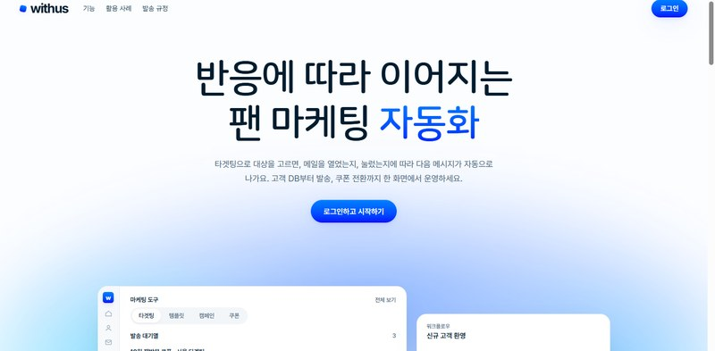
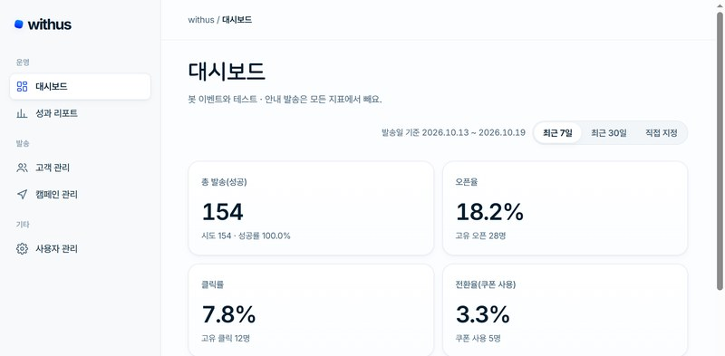
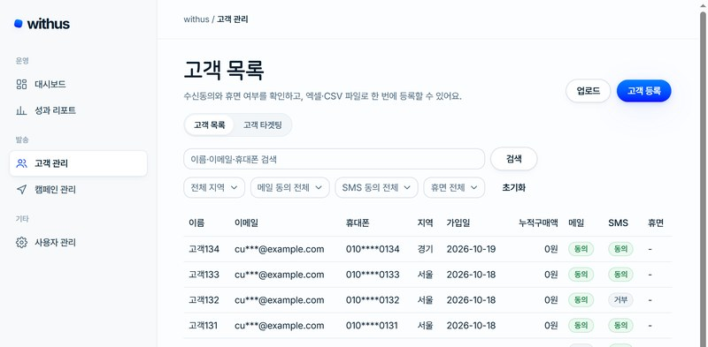
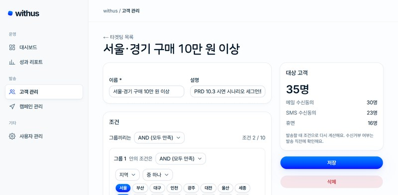
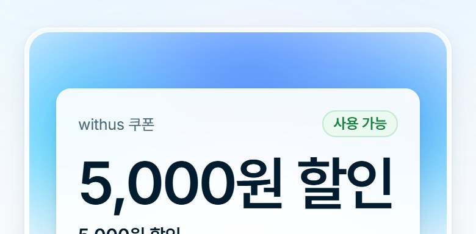

WITHUS
고객을 타겟팅으로 묶고, 트리거부터 발송·추적까지
자동으로 실행하는 CRM 마케팅 솔루션
MY ROLE 전환 구간 프론트엔드 · 사이트 디자인 4인 팀 (PL 1 + 팀원 3) 중 팀원 — 대시보드 · 성과 리포트 · 쿠폰 화면 담당

PART
관리자는 노트북에서, 고객은 휴대폰에서


명단 · 발송 · 쿠폰을 하나의 흐름으로
마케터가 엑셀 · 문자 사이트 · 쿠폰 툴을 오가던 일을 한곳에서 해요. 고객을 조건으로 묶고, 워크플로우로 메일 · SMS를 보내고, 반응과 쿠폰 사용까지 추적해요.
트리거 · 대기 · 조건분기 · 발송 노드를 폼으로 구성, 고객별 자동 실행
메일/SMS 템플릿, 예약 · 테스트 발송, 캠페인 복사 · 삭제
CSV/xlsx 업로드 · 수신동의 관리, 조건 기반 동적 타겟팅
오픈 · 클릭 추적, 쿠폰 발급 · 매장 바코드 전환, 성과 대시보드 · AI 요약
제가 만든 화면
- 발송 · 오픈 · 클릭 · 전환 KPI 카드와 일별 발송 차트
- 최근 7일 · 30일 · 직접 지정 기간 필터
- 워크플로우 단계별 성과 표와 전환 흐름 차트
- AI 성과 요약 카드 (생성 · 재생성)
- 성과 리포트 목록 — 상태 필터 · 페이지

- 메일 링크로 여는 고객 쿠폰 페이지
/c/[token]— 12자리 바코드 - 매장 직원용 사용 처리 화면
/coupons/redeem - 쿠폰 목록 · 생성 · 쿠폰별 발급 현황

- 공통 디자인 토큰 · 한글 조판 토큰 · 기본 부품을 만들고
- 관리자 틀 · 대시보드 · 목록, 로그인 · 홈 · 고객 화면에 적용
- 화면 문장은 해요체, 날짜는 점 형식으로 통일





프론트엔드 구현 포인트
새 라이브러리를 넣지 않기로 한 팀 결정에 맞춰, Code128 C 세트 패턴 표와 검사값 계산을 직접 구현하고 SVG 막대로 그렸어요.
최근 7일 · 30일 · 직접 지정 기간을 usePeriodRange로 모으고, 366일 초과는 요청 전에 막았어요. '오늘'은 서울 시간으로 계산해 자정이 지나면 자동으로 갱신되고, 서버가 거절(400)하면 서버 메시지로 안내해요.
팀 규칙대로 쿼리 키를 query-keys에서만 만들어 캐시 무효화가 어긋나지 않게 했어요. 필터 · 페이지를 바꿀 때는 이전 결과를 유지해 화면이 깜빡이지 않아요.
정액 · 정률 쿠폰 생성 폼을 React Hook Form + Zod 스키마로 검증해, 잘못된 값은 보내기 전에 입력란 옆에서 알려 줘요.
기간 버튼은 aria-pressed 토글로 만들고, 조회에 실패하면 '다시 시도'와 함께 제목 · 이전 페이지를 유지해요.
공통 디자인 토큰과 기본 부품을 만들고(버튼 · 차트는 shadcn/ui 활용), 제목 글꼴(나눔스퀘어라운드)과 한글 조판 규칙을 전 화면에 적용했어요.
// lib/code128.ts — 12자리 쿠폰 번호를 Code128 C 세트 기호로 바꾼다
export function code128cValues(digits: string): number[] {
if (!/^(\d\d)+$/.test(digits)) {
throw new Error("Code128C 는 짝수 자리 숫자만 담는다");
}
const data: number[] = [];
for (let i = 0; i < digits.length; i += 2) data.push(Number(digits.slice(i, i + 2)));
// 검사값 = (105 + Σ 기호값 × 위치) mod 103
const check = data.reduce((sum, v, i) => sum + v * (i + 1), START_C) % 103;
return [...data, check];
}4인 팀에서 협업한 방식
고객 · 발송 · 전환 구간으로 나누고, 저는 전환 구간 화면을 맡았어요. 다른 구간과는 인터페이스를 먼저 합의하고 stub으로 병렬 개발했어요.
PR 필수 · 승인 1명 규칙으로 병합했고, 리뷰에서 나온 서울 시간 처리 · 쿼리 키 규칙 · 오류 처리를 반영해 고쳤어요.
feature/ · fix/ 브랜치와 한글 커밋 메시지를 작은 단위로 남겨 변경 내용을 공유했어요.